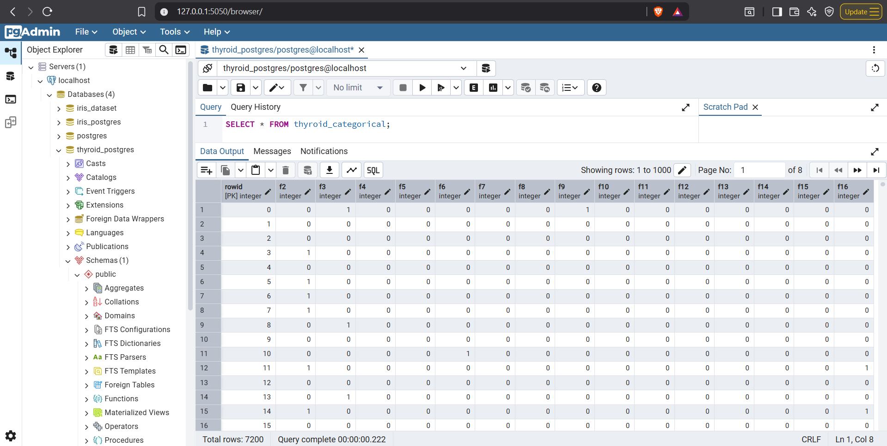
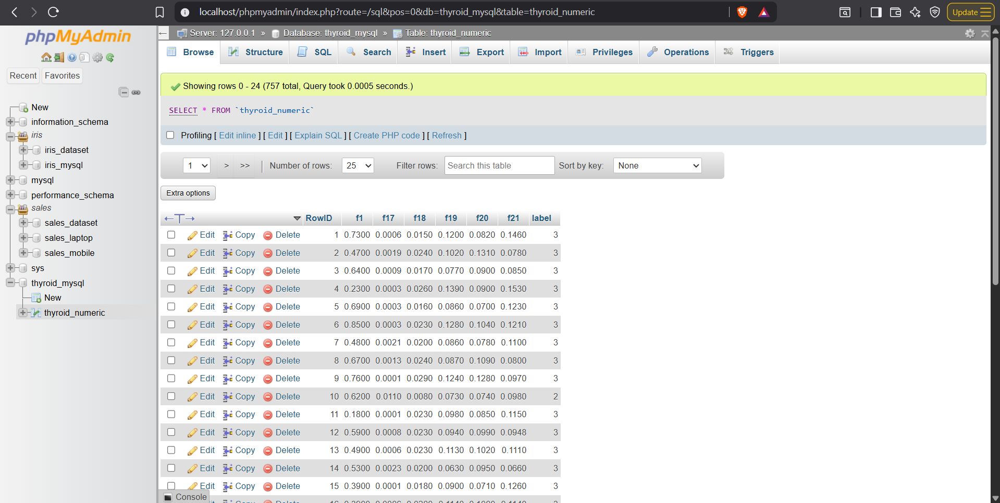

UTS#
Thyroid Disease#
Overview#
Dataset ini berasal dari 10 database terpisah dari Garavan Institute. Dokumentasi disediakan oleh Ross Quinlan. Ada 6 database dari Garavan Institute di Sydney, Australia, dengan perkiraan sebagai berikut untuk masing-masing database: sekitar 2.800 instance pelatihan (data) dan 972 instance pengujian. Dataset ini memiliki banyak data yang hilang (missing data). Ada sekitar 29 atribut, yang bersifat Boolean atau bernilai kontinu. Selain itu, ada 2 database tambahan dari Ross Quinlan: Hypothyroid.data dan sick-euthyroid.data, yang diyakini Quinlan telah rusak. Formatnya mirip dengan database lainnya. Ada juga 1 database lagi dengan 9.172 instance yang mencakup 20 kelas, beserta teori domain terkait. Database thyroid lain dari Stefan Aeberhard: 3 kelas, 215 instance, 5 atribut, tanpa nilai hilang. Dataset thyroid yang cocok untuk pelatihan ANN (Artificial Neural Networks): 3 kelas, 3.772 instance pelatihan, 3.428 instance pengujian, termasuk data biaya (disumbangkan oleh Peter Turney).
Dataset Characteristics#
Jenis Data: Multivariate, Domain-Theory
Bidang Subjek: Health and Medicine (Kesehatan dan Kedokteran)
Tugas Terkait: Classification (Klasifikasi)
Tipe Fitur: Categorical (Kategorikal), Real (Riil)
Jumlah Instance: 7.200
Jumlah Fitur: 5
Nilai Hilang?: Tidak (No)
Attribute Information#
Nama Variabel |
Peran |
Tipe |
Deskripsi |
Satuan |
Nilai Hilang |
|---|---|---|---|---|---|
Class |
Target |
Categorical |
- |
- |
Tidak |
Attribute1 |
Feature |
Integer |
- |
- |
Tidak |
Attribute2 |
Feature |
Continuous |
- |
- |
Tidak |
Attribute3 |
Feature |
Continuous |
- |
- |
Tidak |
Attribute4 |
Feature |
Continuous |
- |
- |
Tidak |
Attribute5 |
Feature |
Continuous |
- |
- |
Tidak |
Dataset Files#
```
└── 📁thyroid+disease
└── 📁costs
├── ann-thyroid.cost
├── ann-thyroid.delay
├── ann-thyroid.expense
├── ann-thyroid.group
├── ann-thyroid.README
├── Index
├── allbp.data
├── allbp.names
├── allbp.test
├── allhyper.data
├── allhyper.names
├── allhyper.test
├── allhypo.data
├── allhypo.names
├── allhypo.test
├── allrep.data
├── allrep.names
├── allrep.test
├── ann-Readme
├── ann-test.data
├── ann-thyroid.names
├── ann-train.data
├── dis.data
├── dis.names
├── dis.test
├── HELLO
├── hypothyroid.data
├── hypothyroid.names
├── Index
├── new-thyroid.data
├── new-thyroid.names
├── sick-euthyroid.data
├── sick-euthyroid.names
├── sick.data
├── sick.names
├── sick.test
├── thyroid.theory
├── thyroid0387.data
└── thyroid0387.names
```
File Structure#
File .data: Berisi data utama (training instances), biasanya dengan ~2.800 instance per database.
File .names: Deskripsi atribut (fitur), kelas (class), dan metadata lainnya.
File .test: Data pengujian (testing instances), biasanya ~972 instance per database.
Folder costs: Khusus untuk data biaya (cost data) yang disumbangkan oleh Peter Turney, digunakan untuk pelatihan model sensitif biaya seperti ANN.
File lain: Seperti teori domain, README, dan metadata.
Python Script#
import pandas as pd
import numpy as np
Load Data#
def load_data(filepath):
df = pd.read_csv(filepath, sep=r'\s+', header=None, dtype=str)
cols = [f'f{i+1}' for i in range(df.shape[1] - 1)] + ['label']
df.columns = cols
df = df.replace('', np.nan)
return df
test_path = './data/UTS/ann-test.data'
train_path = './data/UTS/ann-train.data'
test_df = load_data(test_path)
train_df = load_data(train_path)
print(test_df.info())
<class 'pandas.core.frame.DataFrame'>
RangeIndex: 3428 entries, 0 to 3427
Data columns (total 22 columns):
# Column Non-Null Count Dtype
--- ------ -------------- -----
0 f1 3428 non-null object
1 f2 3428 non-null object
2 f3 3428 non-null object
3 f4 3428 non-null object
4 f5 3428 non-null object
5 f6 3428 non-null object
6 f7 3428 non-null object
7 f8 3428 non-null object
8 f9 3428 non-null object
9 f10 3428 non-null object
10 f11 3428 non-null object
11 f12 3428 non-null object
12 f13 3428 non-null object
13 f14 3428 non-null object
14 f15 3428 non-null object
15 f16 3428 non-null object
16 f17 3428 non-null object
17 f18 3428 non-null object
18 f19 3428 non-null object
19 f20 3428 non-null object
20 f21 3428 non-null object
21 label 3428 non-null object
dtypes: object(22)
memory usage: 589.3+ KB
None
print(test_df.head())
f1 f2 f3 f4 f5 f6 f7 f8 f9 f10 ... f13 f14 f15 f16 f17 f18 \
0 0.29 0 0 0 0 0 0 0 0 0 ... 0 0 0 0 0.0061 0.028
1 0.32 0 0 0 0 0 0 0 0 0 ... 0 0 0 0 0.0013 0.019
2 0.35 0 0 0 0 0 0 0 0 0 ... 0 0 0 0 0 0.031
3 0.21 0 0 0 0 0 0 0 0 0 ... 0 0 0 0 0.001 0.018
4 0.22 0 0 0 0 1 0 0 0 0 ... 0 0 0 0 0.0004 0.022
f19 f20 f21 label
0 0.111 0.131 0.085 2
1 0.084 0.078 0.107 3
2 0.239 0.1 0.239 3
3 0.087 0.088 0.099 3
4 0.134 0.135 0.099 3
[5 rows x 22 columns]
print(train_df.info())
<class 'pandas.core.frame.DataFrame'>
RangeIndex: 3772 entries, 0 to 3771
Data columns (total 22 columns):
# Column Non-Null Count Dtype
--- ------ -------------- -----
0 f1 3772 non-null object
1 f2 3772 non-null object
2 f3 3772 non-null object
3 f4 3772 non-null object
4 f5 3772 non-null object
5 f6 3772 non-null object
6 f7 3772 non-null object
7 f8 3772 non-null object
8 f9 3772 non-null object
9 f10 3772 non-null object
10 f11 3772 non-null object
11 f12 3772 non-null object
12 f13 3772 non-null object
13 f14 3772 non-null object
14 f15 3772 non-null object
15 f16 3772 non-null object
16 f17 3772 non-null object
17 f18 3772 non-null object
18 f19 3772 non-null object
19 f20 3772 non-null object
20 f21 3772 non-null object
21 label 3772 non-null object
dtypes: object(22)
memory usage: 648.4+ KB
None
print(train_df.head())
f1 f2 f3 f4 f5 f6 f7 f8 f9 f10 ... f13 f14 f15 f16 f17 f18 \
0 0.73 0 1 0 0 0 0 0 1 0 ... 0 0 0 0 0.0006 0.015
1 0.24 0 0 0 0 0 0 0 0 0 ... 0 0 0 0 0.00025 0.03
2 0.47 0 0 0 0 0 0 0 0 0 ... 0 0 0 0 0.0019 0.024
3 0.64 1 0 0 0 0 0 0 0 0 ... 0 0 0 0 0.0009 0.017
4 0.23 0 0 0 0 0 0 0 0 0 ... 0 0 0 0 0.00025 0.026
f19 f20 f21 label
0 0.12 0.082 0.146 3
1 0.143 0.133 0.108 3
2 0.102 0.131 0.078 3
3 0.077 0.09 0.085 3
4 0.139 0.09 0.153 3
[5 rows x 22 columns]
Combine train and test#
combined_df = pd.concat([train_df, test_df], ignore_index=True)
# Add RowID for joining later
combined_df['RowID'] = range(len(combined_df))
print(f"Combined dataset shape: {combined_df.shape}")
Combined dataset shape: (7200, 23)
print(combined_df['label'].value_counts())
label
3 6666
2 368
1 166
Name: count, dtype: int64
Define columns#
# Categorical: f2 to f16 (indices 0-14): sex, on_thyroxine, etc.
cat_cols = [f'f{i}' for i in range(2, 17)] # f2 to f16
# Numeric: f1, and f16 to f21 (indices 15-20): age, TSH, T3, TT4, T4U, FTI
num_cols = ['f1'] + [f'f{i}' for i in range(17, 22)] # f1, f17-f21
Split label#
cat_df = combined_df[['RowID'] + cat_cols].copy()
num_df = combined_df[['RowID'] + num_cols + ['label']].copy()
# Preprocess numeric columns: Convert to float, handle '?' or NaN
for col in num_cols:
num_df[col] = pd.to_numeric(num_df[col], errors='coerce') # '?' becomes NaN
# Handle missing in categorical (e.g., replace '?' with 'unknown')
for col in cat_cols:
cat_df[col] = cat_df[col].replace('?', 'unknown')
cat_df.to_csv('./data/UTS/thyroid_pg.csv', index=False)
num_df.to_csv('./data/UTS/thyroid_mysql.csv', index=False)
Verification#
print("Sample categorical:")
print(cat_df.head())
print("\nSample numeric + label:")
print(num_df.head())
Sample categorical:
RowID f2 f3 f4 f5 f6 f7 f8 f9 f10 f11 f12 f13 f14 f15 f16
0 0 0 1 0 0 0 0 0 1 0 0 0 0 0 0 0
1 1 0 0 0 0 0 0 0 0 0 0 0 0 0 0 0
2 2 0 0 0 0 0 0 0 0 0 0 0 0 0 0 0
3 3 1 0 0 0 0 0 0 0 0 0 0 0 0 0 0
4 4 0 0 0 0 0 0 0 0 0 0 0 0 0 0 0
Sample numeric + label:
RowID f1 f17 f18 f19 f20 f21 label
0 0 0.73 0.00060 0.015 0.120 0.082 0.146 3
1 1 0.24 0.00025 0.030 0.143 0.133 0.108 3
2 2 0.47 0.00190 0.024 0.102 0.131 0.078 3
3 3 0.64 0.00090 0.017 0.077 0.090 0.085 3
4 4 0.23 0.00025 0.026 0.139 0.090 0.153 3
Host Database#
Thyroid PostgreSQL (Categorical)#

Thyroid MySQL (Numeric)#
